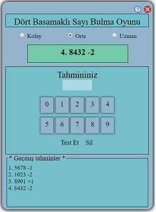

Oyun Kuralları
Oyundaki amaç uygulamanın tuttuğu sayıyı en az tahmin adedi ve en kısa sürede verilen yönlendirmeler ile bulmaktır.
Oyuncunun tahmin için girdiği sayı basamak basamak uygulamanın tuttuğu sayı ile karşılaştırılır.
Değerlendirme sonuçları (+) (-) işaretleri ile basmağı tutan ve tutmayan rakam adetleri şeklinde gösterilir.
- (+) işaretinin yanında gösterilen sayı basamağı uyuşan rakam adedini,
- (-) işaretinin yanında gösterilen sayı basamağı uyuşmayan rakam adedini temsil etmektedir.
Resimde oynanan bir oyundan kesit verilmiştir. Şimdi bu resim üzerinden açıklayalım:
Altta "Geçmiş tahminler" bölümünde;
- 1. tahmin sonucunu yorumlayalım;
Oyuncunun girmiş olduğu sayı ile uygulamanın tuttuğu sayının 1 rakamı tutmakta ancak basamağı yerinde değil
basamağı yerinde olmadığı için önünde (-) işareti var.
- 2. tahmin sonucunu ise;
Oyuncunun girmiş olduğu sayı ile uygulamanın tuttuğu sayının 2 rakamı tutmakta ancak basamağı yerinde değil
basamağı yerinde olmadığı için önünde (-) işareti var.
- 3. tahmin sonucunu ise;
Oyuncunun girmiş olduğu sayı ile uygulamanın tuttuğu sayının 1 rakamı tutmakta ve basamağı da yerinde
o yüzde sayı önünde (+) işareti var.
Oyunda üstte "Kolay", "Orta" ve "Uzman" seviyeleri ile oyuncuya düzey seçim olanağı verilmiştir.
"kolay" seçilirse 3 basamaklı,
"Orta" seçilirse 4 basamklı ve
"Uzman" seçilirse 5 basamaklı sayılar tahmin edilecektir.
- Tahmin edilen sayı içinde bir rakam bir kez kullanılabilir.
- Basamak sayısı kadar rakam girilmelidir. Ne az ne de fazla.
- Sıfırla başlayan sayı olamaz.
- Yeniden oynamak için düzeylerden birini seçiniz.
Dalgınlıkla yanlışa düşülmemesi için uygulama bunları sizin için kolaylaştırmıştır.
İyi eğlenceler.